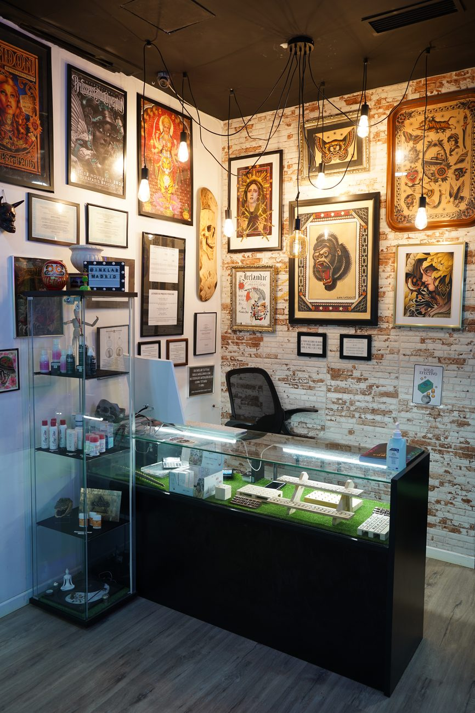

Respuestas directas para resolver dudas antes de pedir cita.
Dudas frecuentes
Tatuajes, piercings, láser, micropigmentación, gemas dentales y participación en eventos o convenciones.
Sí. La idea se ajusta a zona, tamaño, estilo y viabilidad técnica.
Sí. Se analiza el tatuaje previo, saturación, tamaño y objetivo visual.
Fine line, geometría, blackwork, dotwork, cover up, tradicional, anime, lettering y realismo B/N.
Sí. Cuando procede se revisa evolución y se valora downsize.
En la página Equipo dentro de Estudio.